8 Linearisierungsverfahren
Die Methoden der Regelungstechnik basieren auf linearem Verhalten der Übertragungsglieder (Regelstrecke, Regler etc.). Alle Übertragungsglieder, die wir kennengelernt haben, sind linear. In Realität treffen wir aber oft Strecken mit nichtlinearem Verhalten an, d. h. wir werden im Folgenden den Unterschied zwischen linearen und nichtlinearen Regelstrecken betrachten und Verfahren kennenlernen, um nichtlineare Strecken zu linearisieren.
WichtigZiele
- Du weisst, dass die klassische Regelungstechnik auf linearen Übertragungsgliedern basiert und was das für Konsequenzen hat.
- Du kennst Verfahren, um nichtlineare Regelstrecken zu linearisieren.
8.1 Linearität
Die Übertragungsglieder, die wir kennengelernt haben, sind linear, d. h. weisen eine lineare Kennlinie auf, die wir schon mehrfach gesehen haben (vgl. Statisches Verhalten).

WichtigDynamisches Verhalten
Alles, was wir hier behandeln, bezieht sich auf das statische Verhalten. Das dynamische Verhalten (Zeitkonstanten etc.) ist davon nicht betroffen.
Eine lineare Kennlinie weist einen konstanten Proportionalbeiwert K_P auf und geht durch den Ursprung. Mathematisch ist dies eine lineare Funktion x_a = K_P \cdot x_e und eine solche hat die folgenden Eigenschaften:
- Ein Eingangswert von null führt zu einem Ausgangswert von null.
- Wird der Eingangswert z. B. verdoppelt, verdoppelt sich auch der Ausgangswert.
- Kennt man den Ausgangswert für zwei Eingangswerte, so kennt man auch den Ausgangswert für die Summe der beiden Eingangswerte.
HinweisMathematische Definition der Linearität
Da der Ausgang x_a eine Funktion des Einganges x_e ist, können wir allgemein auch x_a = f(x_e) schreiben (diese Schreibweise kennst du sicherlich aus der Mathematik). Die oben genannten Eigenschaften lassen sich damit mathematisch präzise formulieren:
f(k \cdot x_e) = k \cdot f(x_e)
Das bedeutet: Ein k-mal grösseres Eingangssignal führt zu einem k-mal grösseren Ausgangssignal (Homogenität).
f(x_{e_1} + x_{e_2}) = f(x_{e_1}) + f(x_{e_2})
Das bedeutet: Das Ausgangssignal für die Summe mehrerer Eingangssignale entspricht der Summe der Ausgangssignale, die jedes Eingangssignal einzeln erzeugen würde (Additivität).
Bisher sind wir stillschweigend davon ausgegangen, dass unsere Regelstrecke und damit der gesamte Regelkreis lineares Verhalten aufweist, also die obigen Bedingungen erfüllt sind. Damit ergeben sich die folgenden Vorteile:
- Mit einer beliebigen Sprungantwort, z. B. der Einheitssprungantwort können wir ein Übertragungsglied (z. B. die Regelstrecke) vollständig charakterisieren. Eine andere Wahl der Sprungamplitude führt lediglich zu einer Skalierung (Multiplikation) der Einheitssprungantwort. Mit einer einzigen Sprungantwort haben wir also alle Informationen über das Übertragungsglied.
- Das Führungsverhalten und das Störverhalten können wir unabhängig voneinander betrachten, auch wenn in Wirklichkeit Sollwertänderungen und Störgrössen natürlich gleichzeitig auftreten können.
Wegen diesen angenehmen Eigenschaften von linearem Verhalten arbeiten wir bei der Analyse der Regelstrecke oder dem Reglerentwurf in der Regel mit der Einheitssprungantwort und simulieren Führungs- und Störsprünge jeweils separat voneinander.
Sind die obigen Bedingungen nicht erfüllt, so sprechen wir von nichtlinearem Verhalten. Die nachfolgende Abbildung zeigt eine nichtlineare Kennlinie einer Regelstrecke und man erkennt sofort den Unterschied zu Abb. 8.1. Da es sich dabei nicht um eine Gerade handelt, ist die Steigung (und damit der Proportionalbeiwert K_P) nicht konstant.
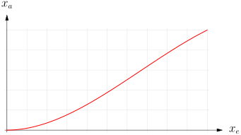
WichtigNichtlineare Regelstrecke
Bei einer nichtlinearen Regelstrecke ist die Kennlinie keine Gerade und/oder geht nicht durch den Ursprung. Die oben genannten Eigenschaften gelten dann nicht mehr. Im Folgenden lernen wir Verfahren kennen, um mit solchen Regelstrecken umzugehen:
Anmerkung: Auch die im letzten Block besprochene Stellgrössenbeschränkung ist eine Form der Nichtlinearität. Dabei war eine ansonsten lineare Kennlinie unten/oben begrenzt.
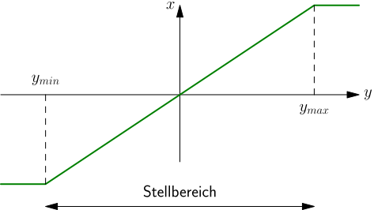
In diesem Block hier geht es um Fälle, in denen die Kennlinie (innerhalb des Stellbereichs) bereits nichtlinear ist (vgl. Abb. 8.2). (Natürlich kann zusätzlich eine Stellgrössenbeschränkung auftreten.)
8.2 Linearisierung
Um nichtlineare Strecken mit den Methoden der klassischen Regelungstechnik behandeln zu können, müssen wir diese linearisieren. Im Folgenden lernen wir zwei Verfahren kennen, die dies ermöglichen.
8.2.1 Linearisierung im Arbeitspunkt
Arbeitet die Regelung in einem bestimmten Betriebspunkt (in der Regelungstechnik Arbeitspunkt (AP) genannt), der sich nicht stark verändert, so kann eine Linearisierung im Arbeitspunkt durchgeführt werden. Dabei wird im Arbeitspunkt die Tangente an die Kennlinie gelegt und damit eine lineare Kennlinie erzeugt (vgl. Abb. 8.3). Damit erreichen wir eine linearisierte Kennlinie, wobei der Proportionalbeiwert der Steigung im Arbeitspunkt entspricht. Die linearisierte Kennlinie gilt jedoch nur im Arbeitspunkt bzw. in der Nähe des Arbeitspunktes. Diese Methode ist daher nur zulässig, wenn sich der Arbeitspunkt im Betrieb nicht (stark) verändert (sie ist daher ideal für Festwertregelungen).
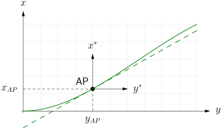
HinweisLinearisierung im AP
Die Linearisierung im Arbeitspunkt kann als Nullpunktverschiebung (Koordinatentransformation) in den Arbeitspunkt (AP) betrachtet werden. Ein- und Ausgangssignale der linearisierten Strecke sind daher immer relativ zum Arbeitspunkt.
Die absoluten (globalen) Grössen y, x und die relativen (auf den Arbeitspunkt bezogenen) Grössen y^*, x^* hängen folgendermassen zusammen:
\begin{align*} y &= y^* + y_{AP} \\ x &= x^* + x_{AP} \end{align*}
Beispiel
Nachfolgend ist eine nichtlineare Kennlinie eines Ventils dargestellt (Eingang: Ventilstellung s [mm], Ausgang: Durchfluss Q [m³/h]). Die Kennlinie soll linearisiert werden für eine Festwertregelung, bei der ein Volumenstrom Q_{AP} = 125 m³/h fliesst.
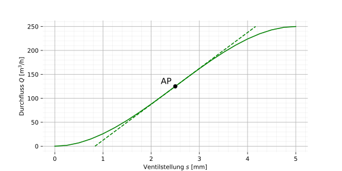
Um einen Durchfluss von 125 m³/h zu erreichen, ist eine Ventilstellung von 2.5 mm nötig. Dies ist der Arbeitspunkt (AP). Legt man am Arbeitspunkt die Tangente an die Kennlinie und bestimmt die Steigung dieser Tangente, so erhält man:
K_P = 75 \, \mathrm{\frac{m^3}{h \cdot mm}}
Wie man in obiger Abbildung erkennt, deckt sich die linearisierte Kennlinie (Tangente) im Bereich von ca. 50 bis 200 m³/h gut mit der wirklichen (nichtlinearen) Kennlinie.
WichtigArbeitspunkt
Im linearisierten System beziehen sich sämtliche Grössen nun auf den Arbeitspunkt, d. h. dieser bildet nun den Nullpunkt. Ein Eingang von z. B. 0.2 mm ergibt einen Ausgang von 15 m³/h (= 0.2 ⋅ 75). Dies entspricht (absolut) einer Ventilstellung von 2.5 mm + 0.2 mm = 2.7 mm und einem Volumenstrom von 125 m³/h + 15 m³/h = 140 m³/h.
Würde sich der Arbeitspunkt an einem anderen Ort befinden, so würde ein anderes K_P resultieren. Im untenstehenden interaktiven Kennliniendiagramm kann der Arbeitspunkt (AP) verschoben werden und es wird automatisch die linearisierte Kennlinie bzw. der entsprechende K_P-Wert angezeigt.
8.2.2 Linearisierung mittels Linearisierungskennlinie
Das obige Verfahren funktioniert nicht bei nichtlinearen Strecken, die über einen breiten Arbeitsbereich geregelt werden müssen, also nicht immer im gleichen Arbeitspunkt arbeiten (typischerweise sind das Folgeregelungen). In solchen Fällen benötigen wir ein Verfahren, welches eine gesamte Kennlinie linearisieren kann. Die Linearisierung mittels Linearisierungskennlinie ist ein solches Verfahren. Dabei wird die Stellgrösse vor der Regelstrecke durch ein zusätzliches Übertragungsglied (Linearisierungskennlinie (LK) auch Vorlastkennlinie genannt) dahingehend modifiziert, dass gesamthaft lineares Verhalten erreicht wird.
Damit gesamthaft lineares Verhalten resultiert, muss die Linearisierungskennlinie (LK) die Nichtlinearität der Regelstrecke (RS) möglichst gut kompensieren. Dies wird erreicht, wenn die Linearisierungskennlinie die Inverse (Umkehrfunktion) der Regelstrecken-Kennlinie ist.
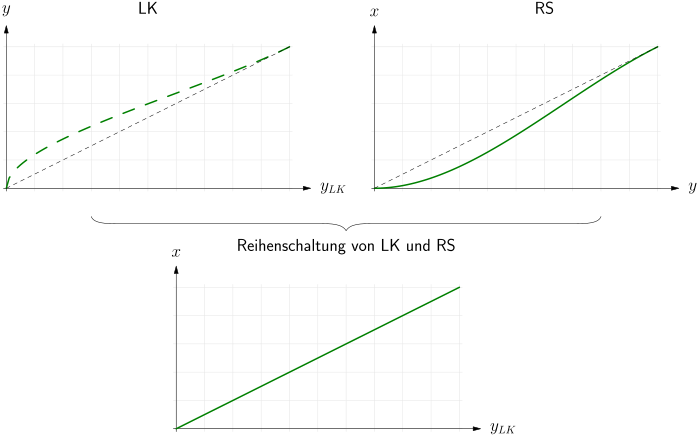
Mit dem obigen Verfahren resultiert im Idealfall eine lineare Kennlinie über den gesamten Arbeitsbereich. Es ist allerdings nicht immer möglich, die Regelstrecken-Kennlinie zu invertieren (z. B. wenn für mehrere Stellgrössenwerte dieselbe Ausgangsgrösse resultiert o. ä.).
HinweisExkurs: Umkehrfunktion (Inverse)
Die Umkehrfunktion bzw. Inverse einer Funktion kann grafisch als Spiegelung der Funktion an der Winkelhalbierenden y = x (gestrichelte Linie) aufgefasst werden. Durch Ziehen an den Punkten im untenstehenden Diagramm kann eine “nichtlineare” Funktion kreiert werden. Beobachte, wie sich deren Umkehrfunktion (gestrichelt) dabei verhält.
Beispiel
Im Folgenden wollen wir für die bereits weiter oben verwendete Ventilkennlinie eine Linearisierungskennlinie entwerfen, um gesamthaft lineares Verhalten über den gesamten Arbeitsbereich zu erreichen. Wir benötigen also die Inverse dieser Kennlinie.
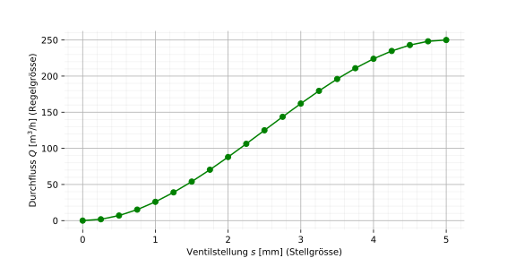
Wenn wir eine Kennlinie experimentell bestimmen, so haben wir üblicherweise diskrete Messpunkte (Punkte in obigem Diagramm). Wir haben also zwei Arrays (Ventilstellung s und Durchfluss Q), die in den ersten beiden Spalten von Tab. 8.1 repräsentativ aufgelistet sind.
- Als Erstes normieren wir die Regelgrösse auf den Bereich 0-1 bzw. 0-100%. Die normierten Werte sind in der letzten Spalte der Tab. 8.1 aufgeführt. In Python würde man die Normierung z. B. folgendermassen umsetzen:
Code
Q_norm = (Q-min(Q))/(max(Q)-min(Q)) # Normierung der Regelgrösse auf 0-1| Stellgrösse Ventilstellung s [mm] |
Regelgrösse Durchfluss Q [m³/h] |
normierte Regelgrösse normierter Durchfluss Q_{norm} [%] |
|---|---|---|
| 0.0 | 0.0 | 0 % |
| 0.25 | 1.8 | 0.73 % |
| 0.5 | 7 | 2.8 % |
| … | … | … |
| 4.5 | 243 | 97.2 % |
| 4.75 | 248.2 | 99.3 % |
| 5 | 250 | 100 % |
- Nun mappen wir die obigen Prozentwerte (normierte Regelgrösse) auf den Stellgrössenbereich. 100% entspricht der max. Ventilstellung von 5 mm und 0% folglich einer Ventilstellung von 0 mm. Dies ergibt die Eingangsgrösse der Linearisierungskennlinie (siehe erste Spalte von Tab. 8.2).
Code
s_LK = Q_norm * (max(s) - min(s)) + min(s) # Mapping auf Stellgrösse- Der Ausgang der Linearisierungskennlinie entspricht dem Eingang der Regelstrecken-Kennlinie (Stellgrösse), d. h. der ersten Spalte von Tab. 8.1. Die Linearisierungskennlinie modifiziert also die Stellgrösse genau so, dass die Nichtlinearität gerade “ausgeglichen” wird.
| Eingang Linearisierungskennlinie s_{LK} [mm] |
Ausgang Linearisierungskennlinie s [mm] |
|---|---|
| 0.0 (= 0 % von 5 mm) | 0.0 |
| 0.036 (= 0.73 % von 5 mm) | 0.25 |
| 0.14 (= 2.8 % von 5 mm) | 0.5 |
| … | … |
| 4.86 (= 97.2 % von 5 mm) | 4.5 |
| 4.96 (= 99.3 % von 5 mm) | 4.75 |
| 5 (= 100 % von 5 mm) | 5.0 |
Nachfolgend ist die Linearisierungskennlinie grafisch dargestellt und wir können uns davon überzeugen, dass ihr Verlauf qualitativ der Inversen der Ventilkennlinie entspricht.
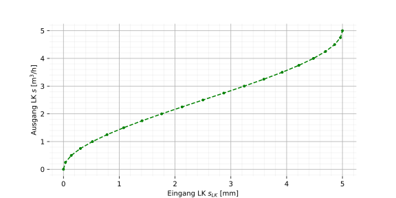
Mit der vorgeschalteten Linearisierungskennlinie erreichen wir nun gesamthaft lineares Verhalten und wir können uns damit wieder in der gewohnten “linearen Welt” bewegen. Die Reihenschaltung von LK und RS ist linear und kann wie gehabt mit dem Proportionalbeiwert K_P beschrieben werden.
K_P = \frac{\Delta Q}{\Delta s} = \frac{250 \, \mathrm{m^3/h}}{5 \, \mathrm{mm}} = 50 \frac{\mathrm{m^3/h}}{\mathrm{mm}}
Anmerkung: Das linearisierte K_P entspricht also der Steigung der Geraden, die das Minimum und das Maximum der Kennlinie miteinander verbindet. Mit diesem K_P würden wir jetzt den Reglerentwurf vornehmen.
WichtigLinearisierungskennlinie
Im Idealfall wird die Nichtlinearität komplett kompensiert durch die Linearisierungskennlinie und man kann für den Reglerentwurf bzw. Simulationen in Boris die gewohnten linearen Übertragungsglieder verwenden. Die effektive nichtlineare Regelstrecke sowie die Linearisierungskennlinie werden dann für den Reglerentwurf nicht explizit benötigt. Bei der späteren Implementierung des Reglers z. B. auf der SPS würde dann die Linearisierungskennlinie ebenfalls implementiert werden und man hätte dann dieselben Verhältnisse wie in der Simulation.
Will man aus bestimmten Gründen die Linearisierungskennlinie und die nichtlineare Regelstrecke explizit in die Simulation einbauen, kann man in Boris den Block Benutzerdefinierte Kennlinie (unter Statik) verwenden.
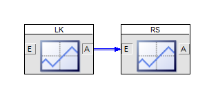
HinweisBsp. in Python
Nachfolgend ist ein komplettes Python-Beispiel für die Bestimmung der Linearisierungskennlinie aufgeführt.
Code
import numpy as np
import matplotlib.pyplot as plt
# nichtlineare Regelstrecke
y = np.array([0., 1., 2., 3., 4., 5.]) # Stellgrösse
x = np.array([0., 10., 14., 17., 18., 25.]) # Regelgrösse
# Linearisierungskennlinie
x_norm = (x - min(x)) / (max(x) - min(x)) # norm. Regelgrösse
y_LK = x_norm * (max(y) - min(y)) + min(y) # Eingang LK
fig, axs = plt.subplots(ncols=2, figsize=(8,3))
axs[0].plot(y_LK, y, 'go--')
axs[0].set_title('LK')
axs[0].set_xlabel('$y_{LK}$')
axs[0].set_ylabel('$y$')
axs[0].grid()
axs[1].plot(y, x, 'go-')
axs[1].set_title('RS')
axs[1].set_xlabel('$y$')
axs[1].set_ylabel('$x$')
axs[1].grid()
plt.show()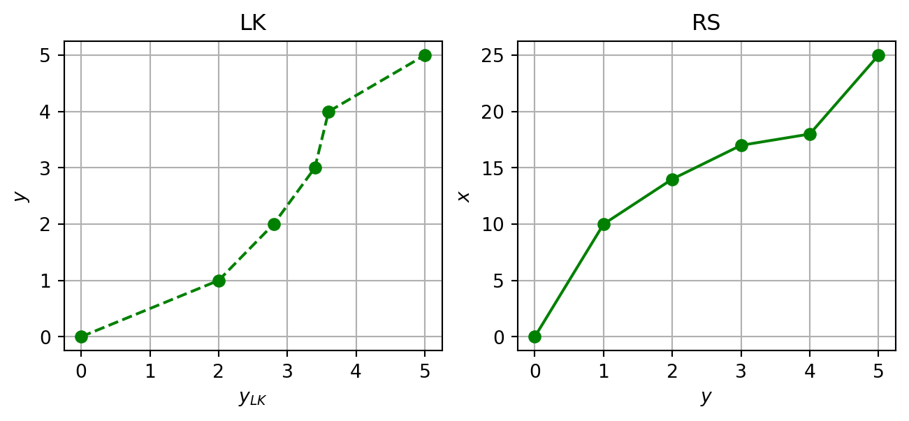
Die Linearisierungskennlinie könnte nun exportiert und später in der SPS bzw. dem Mikrocontroller implementiert werden.
| Eingang der LK y_{LK} |
Ausgang der LK y |
|---|---|
| 0.0 | 0.0 |
| 2.0 | 1.0 |
| 2.8 | 2.0 |
| 3.4 | 3.0 |
| 3.6 | 4.0 |
| 5.0 | 5.0 |
Aufgaben
TippAufgabe 8.1
Von einer nichtlinearen Regelstrecke ist nachfolgend die Kennlinie gegeben. Führe eine Linearisierung im Arbeitspunkt (x_{AP} = 55\,\mathrm{mm}) durch und gebe den Proportionalbeiwert der linearisierten Strecke nachfolgend an.
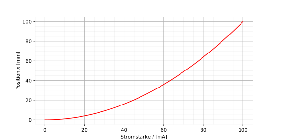
K_P =
Wenn du nun mit der linearisierten Strecke eine Sprungantwort durchführst und dabei einen Eingangswert von 1 mA aufprägst, welchen absoluten (globalen) Werten entsprechen die Werte von Ein- und Ausgang? Erläutere dies in Worten.
WichtigLösung
Für die Linearisierung im Arbeitspunkt wird die Tangente an den Arbeitspunkt angelegt bzw. die Steigung im Arbeitspunkt bestimmt (= Proportionalbeiwert K_P). Für eine Regelgrösse von 55 mm (=x_{AP}) ist eine Stellgrösse von 74 mA (=y_{AP}) nötig. Dies entspricht dem Arbeitspunkt der Regelung.
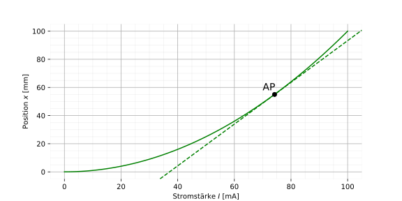
K_P = 1.5 \, \frac{\mathrm{mm}}{\mathrm{mA}}
In der Simulation (mit der linearisierten Strecke) ist dann alles auf den Arbeitspunkt x_{AP} bzw. y_{AP} bezogen. Eine simulierte Stellgrösse von 1 mA ergibt eine Position von 1.5 mm (= K_P). In absoluten (globalen) Grössen würde dies 1 mA + 74 mA = 75 mA bzw. 1.5 mm + 55 mm = 56.5 mm entsprechen.
TippAufgabe 8.2
Von einem technischen Heizsystem (Eingang: Spannung [V], Ausgang: Temperatur [°C]) hast du die folgende Sprungantwort bekommen. Es fällt auf, dass eine Spannung von 0 V nicht einer Temperatur von 0 °C entspricht, sondern 23 °C.
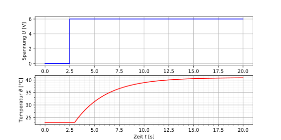
Identifiziere und modelliere die Regelstrecke in Boris und simuliere die obige Sprungantwort, dass eine exakte Übereinstimmung resultiert (für 0 V am Eingang sollen 23 °C herauskommen usw.).
Erkläre, warum die obige Regelstrecke streng genommen als nichtlinear betrachtet werden muss.
WichtigLösung
Das Übertragungsglied wird wie gehabt identifiziert. Es handelt sich um ein P-T1-Tt.
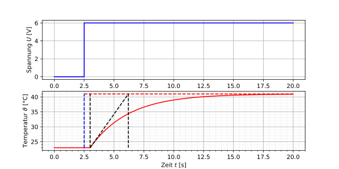
K_P = \frac{\Delta \vartheta}{\Delta U} = \frac{18 \, \mathrm{°C}}{6 \, \mathrm{V}} = 3 \, \frac{\mathrm{°C}}{\mathrm{V}}
T_1 = 3.2 \, \mathrm{s}
T_t = 0.5 \, \mathrm{s}
Damit bei einem Eingangswert (Stellgrösse) von 0 V eine Temperatur von 23 °C resultiert, muss in der Simulation ein Offset (Verschiebung) verwendet werden.
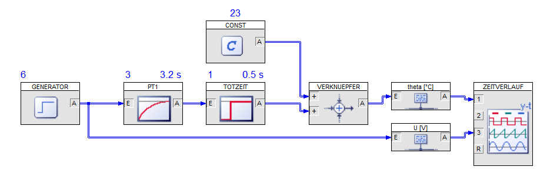
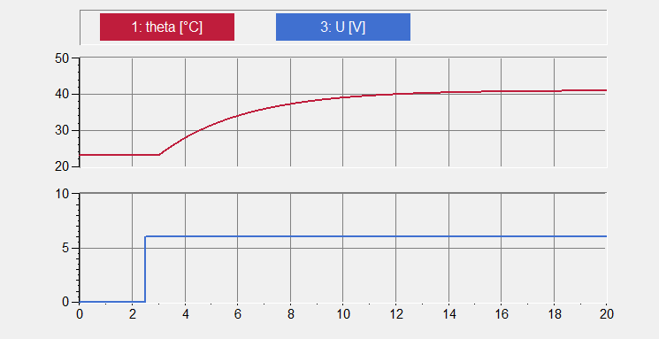
Die Kennlinie dieser Regelstrecke geht offensichtlich nicht durch den Ursprung, da eine Stellgrösse von 0 V eine Temperatur von 23 °C erzeugt. Dies ist streng genommen eine Form der Nichtlinearität und kann ebenfalls als Nullpunktverschiebung in den Arbeitspunkt (\vartheta_{AP} = 23\,\mathrm{°C}) aufgefasst werden.
TippAufgabe 8.3
Gegeben ist die nachfolgend abgebildete Kennlinie einer nichtlinearen Regelstrecke. Erstelle die Linearisierungskennlinie dafür. Verwende Python oder Excel (um zukünftig auch eine Vorlage für solche Linearisierungsaufgaben bereit zu haben).
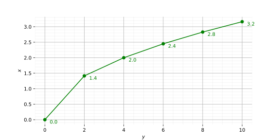
WichtigLösung
Mit Python kann das genau wie oben umgesetzt werden (alternativ mit Excel oder manuell/grafisch).
Code
import numpy as np
# nichtlineare Regelstrecke
y = np.array([0., 2., 4., 6., 8., 10.]) # Stellgrösse
x = np.array([0.0, 1.4, 2.0, 2.4, 2.8, 3.2]) # Regelgrösse
# Linearisierungskennlinie
x_norm = (x - min(x)) / (max(x) - min(x)) # norm. Regelgrösse
y_LK = x_norm * (max(y) - min(y)) + min(y) # Eingang LKDie Linearisierungskennlinie (LK) wird hier tabellarisch ausgegeben (alternativ wäre ein TXT-Export oder eine grafische Darstellung möglich).
| Eingang der LK y_{LK} |
Ausgang der LK y |
|---|---|
| 0.0 | 0.0 |
| 4.375 | 2.0 |
| 6.25 | 4.0 |
| 7.5 | 6.0 |
| 8.75 | 8.0 |
| 10.0 | 10.0 |